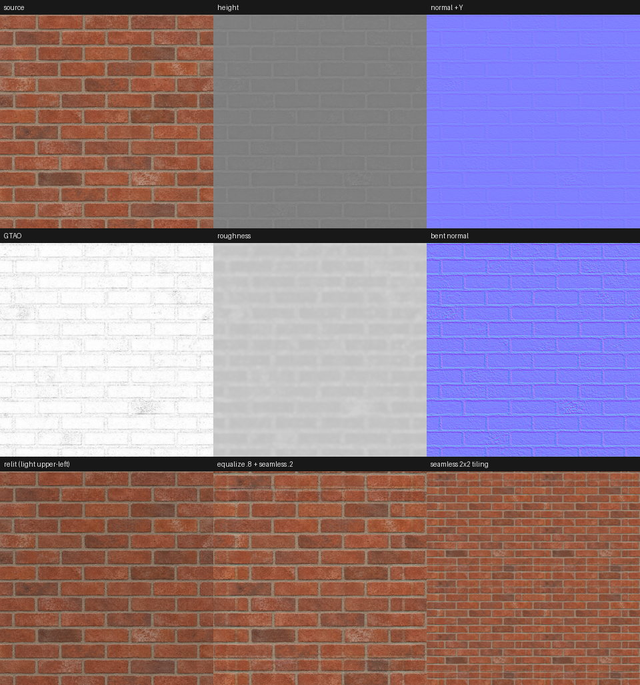
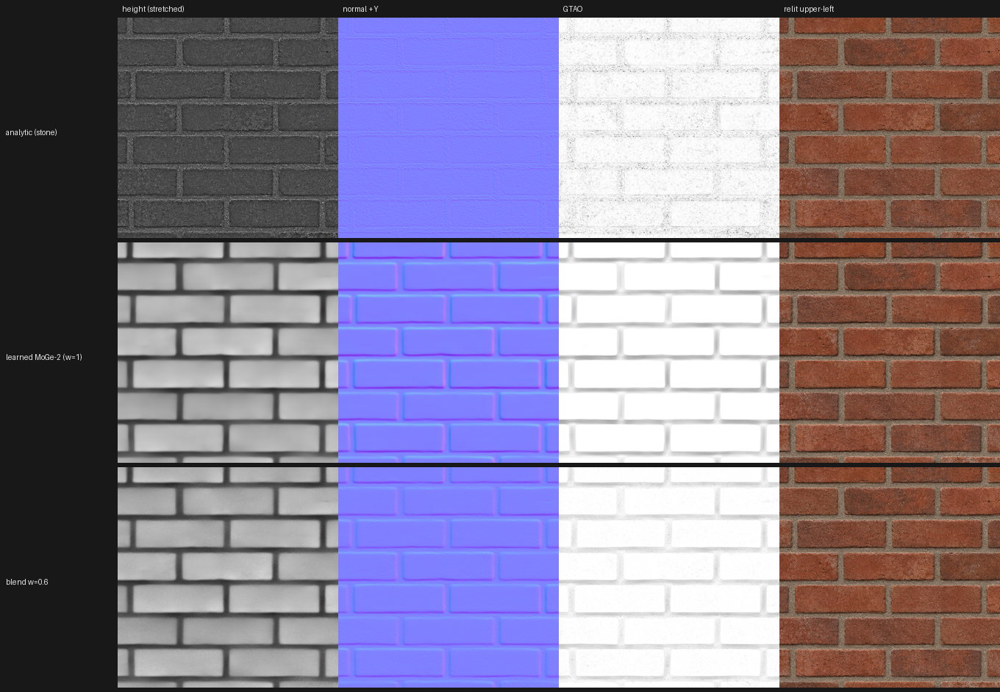
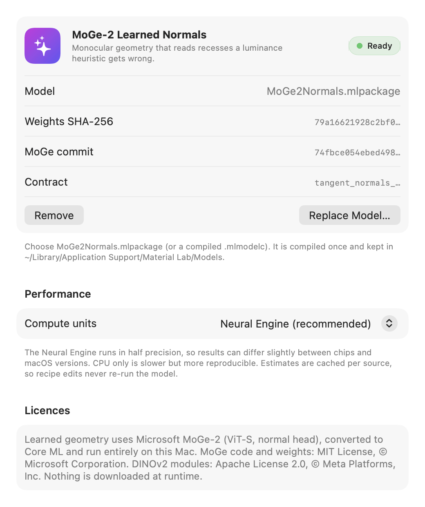
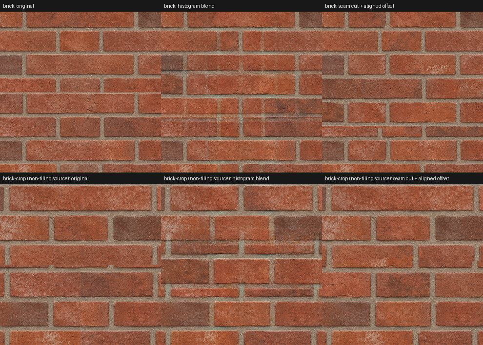
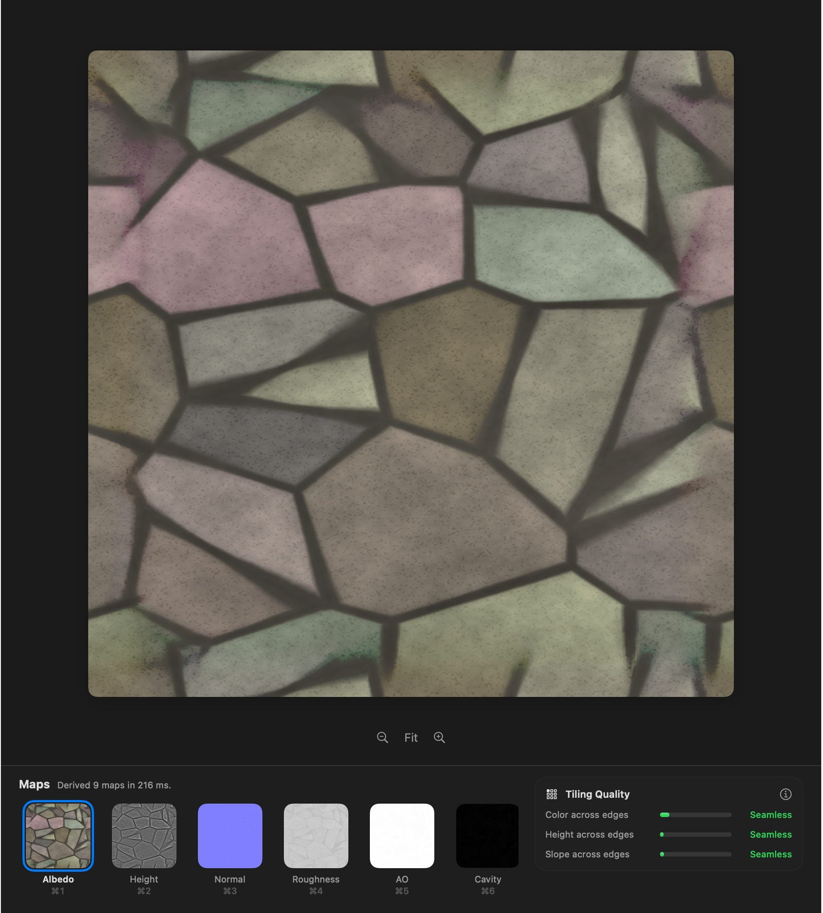
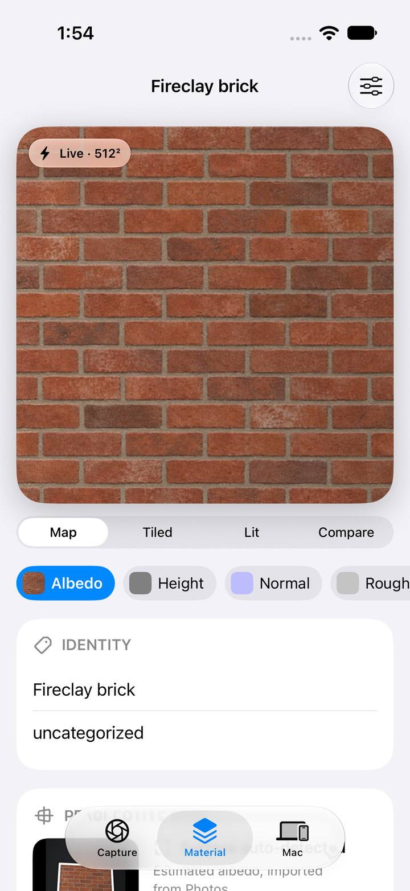

Software / 23 September 2026
Material Lab
A photograph in, a set of editable PBR texture maps out, and nothing leaves the machine. Material Lab is a free macOS 27 app, with an iOS 27 companion for capture and a command line tool for batches. It has no account, no upload and no engine dependency: you review the maps, then hand the bundle to whatever cooker or DCC pipeline you already use.
Installing the release
The download is MaterialLab-1.2.0-macOS.dmg, with the learned-geometry model built in. It is signed with a Developer ID but not yet notarized, so the first launch is blocked by Gatekeeper and needs a confirmation in System Settings › Privacy & Security before it will open. It requires an Apple Silicon Mac running macOS 27. The source builds with Xcode 27, CMake and Ninja.
An RGB photograph does not uniquely determine the shape of a surface. Lighting, pigment, specular reflection, shadow and relief can all produce the same pattern of pixels, so any tool that promises height and normals from a single image is estimating, and the honest version says so. Material Lab records every estimate's recipe and provenance in the bundle beside the maps. Roughness starts from a material prior you choose; metalness is never inferred, only assigned. The derivation core is a versioned C++23 library that runs on every core and is bit-for-bit repeatable: a 1K image takes about 0.1 s on an M5, and the learned stage adds about 0.3 s.
Section oneWhat it derives
From one square sRGB photograph the core produces the following, each as a PNG with its encoding written into the manifest.
- Albedo A byte-exact copy of the source unless delighting or tiling is on.
- Height 16-bit, normalised, from multi-scale relief bands or the learned stage.
- Normal Tangent space, +Y green-up by default (glTF, OpenGL, Blender, Unity), with a −Y option for DirectX and Unreal.
- Roughness A chosen prior, with optional variation that follows local micro-contrast.
- Ambient occlusion GTAO's cosine-weighted horizon integral evaluated on the heightfield.
- Cavity, convexity, slope, edge Diagnostic scalar maps from the local height average and gradient.
- Bent normal Optional, from the analytic XeGTAO cosine-weighted form.
- ORM Occlusion, roughness and metalness packed, available once metalness is assigned.
The relief comes from Rec. 709 luminance in linear light, filtered at three scales and weighted by a material preset; a Scharr derivative of the height gives the normal. Both are art-directable: amplitude, polarity, normal strength and occlusion strength are separate controls, and the app re-derives live as you move them.

Section twoLearned geometry, and where brightness gets it backwards
The analytic path has one well-known failure: it assumes that brighter means higher. On most weathered surfaces that is a fair guess, but on brick it is exactly wrong. The mortar is paler than the brick, so a luminance heuristic raises the joints and sinks the bricks, and the relit result looks like a wall pushed out from behind. Every single-image tool built on brightness has this problem, and no amount of preset tuning fixes it, because the information is not in the brightness.
Material Lab's answer is an optional learned stage built on Microsoft's MoGe-2 monocular geometry model (ViT-S, normal head, MIT licensed). The pinned weights are converted once to a Core ML fp16 model and run on the Neural Engine. The converted model returns +Y tangent normals for 518² tiles; larger images are covered with tiles at 50 percent overlap, blended with a sine window, and resampled to the source size. The core then strips the low-frequency tilt that scene-trained models add, integrates the slopes to height with a deterministic multigrid Poisson solver, and blends that height with the analytic height under a single weight, from 0 (analytic only) to 1 (learned only). Occlusion, cavity, roughness variation and everything downstream then use the blended geometry, so the learned stage improves every map, not just the normal.

A numeric check confirms the convention rather than just the look of it: on the brick photograph, the tops of the bricks just below each joint face up (green +0.034) and the bottoms face down (green −0.045). The Core ML conversion was verified against the stock PyTorch forward pass on a 518² brick tile, with a mean angular difference of 0.045° and a 99th percentile of 0.23°. A warm tile prediction takes about 60 ms on an M5.
The model is a guide, not a replacement. Fine detail above the model's working size still comes from the analytic path whenever the weight is below 1, and the estimate is cached per source so that editing the recipe never re-runs the network. Because the Neural Engine runs in half precision, results can differ slightly between chips and OS versions; a CPU-only mode is slower and more reproducible. Every export records the model file, the weights hash, the source commit, the compute units, the tiling and a hash of the guide normals that were actually fed to the core, so a bundle can always say exactly how much of its geometry was learned.

I chose MoGe-2 for its licence as much as its quality. The single-image material estimators that lead the field on quality, among them ControlMat, MaterialPicker, DualMat and HiMat, publish no permissively licensed weights and generate plausible maps rather than deterministic estimates. Models with use restrictions or unclear terms, including Stable Diffusion derived normal and delight models, DSINE, the non-commercial Depth Anything variants and Marigold, were left out rather than argued over.
Section threeMaking it tile
A photograph of a wall does not wrap. The usual fix is to blend the opposite edges into each other, and the usual result on anything with structure is a ghost: two half-transparent brick courses sliding across each other in a band down the middle. Material Lab has two methods and picks the right one for the texture.
The default is a seam cut, a minimum-error boundary cut in the style of image quilting. For each axis, the output uses an offset copy of the image near both opposite edges, so the copy is continuous across the wrap, and the original in the interior. The offset is searched coarse to fine to align the texture with itself in the bands, which for brick means a whole number of courses. Each transition between original and copy then follows the lowest-difference path through its band, found by dynamic programming and feathered by only two pixels either side, and paths start and end at the same offset so the other axis stays continuous. Structured textures keep crisp features; pixels outside the bands are untouched.
The alternative is a histogram-preserving blend for fine stochastic textures such as sand, noise and grain, where soft lighting drift would make any cut visible. Each linear channel is Gaussianised through its empirical CDF, the two copies are blended with the variance-preserving weight, and the result is mapped back through the inverse, so the blended zone keeps the contrast of the original instead of going flat and grey.

When a pattern's period does not divide the tile size, a defect somewhere is unavoidable. The cut hides it in one place, in the joint where it is least visible; the blend spreads it as ghosting across the whole band. On a smooth pattern, the cut reduced the wrap mismatch from 0.039 to 0.008, and on stripes it touched 192 intermediate pixels where the blend touched 1,224. The app's tile view reports colour, height and slope mismatch across the edges separately, so you can see whether a source is genuinely seamless or merely looks it.
Section fourDelighting and occlusion
The second thing a photograph carries that a texture should not is the light it was taken in. A wall lit from one side has a brightness gradient across it, and a brightness-driven relief step will faithfully turn that gradient into a tilt. Equalize is the delighting control: it divides linear RGB by a smooth luminance field with a Gaussian scale of about an eighth of the tile, pulls the result toward the image's mean luminance, and raises the gain to the chosen strength. Hue is preserved and the gain is clamped between a quarter and four times, so it flattens lighting without inventing colour. It runs before tiling, so a lighting gradient never becomes a seam, and the relief is derived from the conditioned image. The bottom row of Figure 1 shows the effect on a source with a visible falloff.
Ambient occlusion is where the heightfield earns its keep. Material Lab evaluates GTAO's cosine-weighted slice integral on the height, viewed from straight above: eight two-sided slices, so sixteen horizon directions, with eight bilinear taps per side placed exactly on each slice line. Horizons are clamped to the normal's hemisphere. Each pixel is normalised by its own unoccluded integral, which means an open plane at any slope comes out at exactly 1 rather than being darkened for tilting. The occlusion geometry sees the height scaled by its own strength control, independent of the normal response, and a radius bounds the horizon search. The bent normal uses XeGTAO's analytic cosine-weighted form, and every sine and cosine in the loop comes from exact angle-addition identities, with a short polynomial supplying only the arccosine. Compare the GTAO columns in Figure 2: on the analytic geometry the occlusion falls on the brick faces, and on the learned geometry it settles into the joints.
Section fiveThe apps and the CLI
The Mac app is native, built for macOS 27's design language: a source sidebar, a canvas with floating controls, an inspector with the recipe grouped into sections, and a map strip on ⌘1 to ⌘9. Every recipe change re-derives live, debounced, with the core compiled at -O3. There is a before-and-after split, a 3×3 tile view with a tiling-quality card, a relighting view, and a RealityKit PBR preview on a sphere, cube or plane. Recipes are stored per source, photos can be dropped in, and a paired iPhone appears over Bonjour with TLS and per-capture approval.

The iPhone app is for capture. It has a full-bleed camera with level and glare hints, Vision-based auto-crop to a square, on-device derivation with a live 512² preview, output from 512 to 4K, and tiled, lit-sphere and compare modes for review. Captures persist locally, originals are scrubbed of metadata, and a finished capture can be exported to Files or sent over the local link to a pinned Mac. The same C++ core is compiled into both apps, and a decoded-map parity check between them was pixel-exact for algorithm 1.0.0.

The command line tool exposes the same core for batches and for scripting, and doubles as a validator that checks manifest fields and map hashes and rejects forged manifests.
material-lab --input photo.png --output brick.pbrmaterial --label "red brick" \
--preset stone --polarity -1 --equalize 0.6 --seamless 0.15 \
--learned-normals MoGe2Normals.mlmodelc
material-lab --validate brick.pbrmaterialA bundle is a directory of PNGs and a JSON manifest carrying the map and source hashes, the algorithm version, every recipe parameter, the semantic label, the map encodings and the provenance. Nothing is imported into a game engine automatically; the manifest exists so that whatever does import it can check what it is getting.
Section sixWhat it does not claim
- The maps are estimates. Height is pseudo-height and the occlusion is heightfield occlusion; presets are editable priors, not material recognition.
- The source alone does not determine intrinsic roughness, metalness, specular F0, emission, opacity, thickness or physical depth. Roughness comes from a prior, and metalness only from you.
- Bundles from algorithm 1.0.0 encoded the normal's green channel down while claiming +Y. The validator warns, and they should be re-derived.
- The learned stage is fp16 on the Neural Engine, so its output can drift slightly between chips and OS versions. The manifest records enough to tell.
- The iOS app has been validated on the simulator only. No physical camera, no hardware colour pipeline and no real-device local-network permission flow has been tested.
- The release is Developer ID signed but not notarized.
Sources
Methods. Martin, Roullier, Rouffet, Kaiser and Boubekeur, MaterIA: Single Image High-Resolution Material Capture in the Wild (Adobe, Eurographics 2022), for the overall shape of the problem and its remarks on roughness from a single observation. Jimenez, Wu, Pesce and Jarabo, Practical Real-Time Strategies for Accurate Indirect Occlusion, SIGGRAPH 2016 courses, for GTAO, with Intel's MIT-licensed XeGTAO for the bent-normal form. Heitz and Neyret, High-Performance By-Example Noise using a Histogram-Preserving Blending Operator, HPG 2018, for the blend. Efros and Freeman, Image Quilting for Texture Synthesis and Transfer, SIGGRAPH 2001, for the minimum-error boundary cut. MoGe-2 (Microsoft, MIT; DINOv2 modules Apache 2.0) for the learned normals. The glTF 2.0 specification for the export conventions.
What was verified. The core's tests run with assertions in release builds and cover the +Y ramp convention and the DirectX flip, exactly unoccluded tilted planes, pit occlusion, seam removal, contrast preservation in the blend zone, equalisation of a lighting ramp, ORM gating, and threaded determinism at 1K. The Core ML conversion of MoGe-2 was checked against the stock PyTorch model on a 518² brick tile. Every figure on this page is the project's own verification output, unaltered apart from downscaling and, for Figure 5, cropping to the window content.
What was not. All timings are from one M5 Mac and will differ elsewhere. The iOS app was validated on the simulator only. Mac and iPhone map parity was measured pixel-exact for algorithm 1.0.0 and has not been re-measured for 1.2.0. The macOS figures are the app's off-screen renders, which draw the glass surfaces as flat regions; layout and map rendering were checked, the material of the glass was not.